Ph.D. Candidate
Shanghai Jiao Tong University
Email: caojie23@sjtu.edu.cn
Google Scholar | GitHub | CV
I am currently a Ph.D. candidate in information and communication engineering at Shanghai Jiao Tong University, advised by Prof. Changzhan Gu. My research interests are mainly in millimetre-wave radar systems and artificial intelligence (AI) algorithms in microwave sensing, especially in biomedicine, human-computer interaction (HCI) and indoor localization.
I am concerned with the construction of machine learning models with good interpretability and high robustness, including custom pattern recognition models dominated by kernel method and Bayesian inference, and the construction of multimodal big models driven by neural networks.
* indicates equal contribution.
Unobtrusive Cardiac Activity Monitoring Using Millimetre-Wave Radar: Principles, Applications, and Perspectives
Y. Li, Jie Cao, and C. Gu.
[Journal] Bioelectromagnetics in Medicine, 2026.
[Link]
Millimeter-Wave Radar-Based Unobtrusive Arrhythmia Classification Using Deep Learning
Y. Li, Z. Huang, Jie Cao, X. Xu, Q. Chen, L. Zhang, and C. Gu.
[Conference] 56th EuMC, London, UK, Oct. 2026.
[Link]
Non-Contact Cardiac Activity Monitoring via mmWave Radar for Arrhythmia Recognition and STI Estimation
Y. Li, Z. Huang, Jie Cao, X. Xu, Q. Chen, X. Yuan, J. Chen, L. Zhang, and C. Gu.
[Conference] IEEE MTT-S IWS, Shenzhen, China, May 2026.
[Link]
Non-contact Detection of Cheyne-Stokes Respiration and Sighs with Biomedical Microwave Radar
M. Yuan, Jie Cao, L. Wang and C. Gu.
[Conference] IEEE MTT-S IWS, Shenzhen, China, May 2026.
[Link]
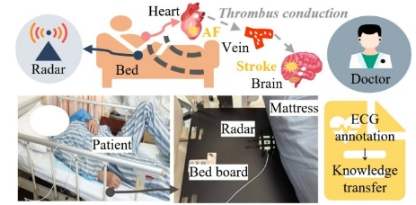
Contactless Detection of Atrial Fibrillation in Stroke Patients Based on Bayes Probability Model with Microwave Biomedical Radar
Jie Cao, L. Wen, L. Wang and C. Gu.
[Conference] IEEE IMBioC, Cosenza, Italy, Apr. 2026.
[Link]
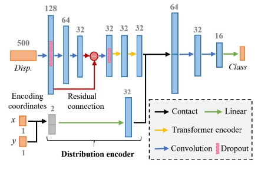
Contactless Cardiac Detection of Arrhythmia based on Distribution Encoding Network with Microwave Biomedical Radar
Jie Cao, L. Wen, S. Dong, Y. Li, L. Wu, Y. Guo, Z. Zeng, Q. Cao, K. Chen and C. Gu.
[Journal] IEEE TMTT, vol. 74, no. 4, pp. 3135–3148, Apr. 2026.
[Link]
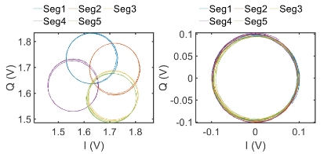
Robust and Adaptive DC Offset Calibration in Microwave Sensing Systems for Long-Term Microwave Cardiogram Detection
L. Wen, Jie Cao, Y. Guo, Z. Zeng, Q. Cao, K. Chen and C. Gu.
[Journal] IEEE TMTT, vol. 74, no. 2, pp. 1756–1769, Feb. 2026.
[Link]
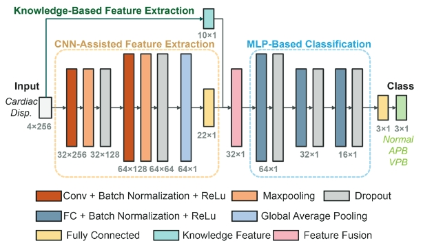
A Knowledge-Fusion Deep Learning Approach for Premature Beat Classification Using mmWave Radar in Clinical Settings
Y. Li, G. Xue, Jie Cao, X. Xu, Q. Chen, L. Zhang and C. Gu.
[Conference] IEEE APMC, Jeju Island, Korea, Dec. 2025.
[Link]
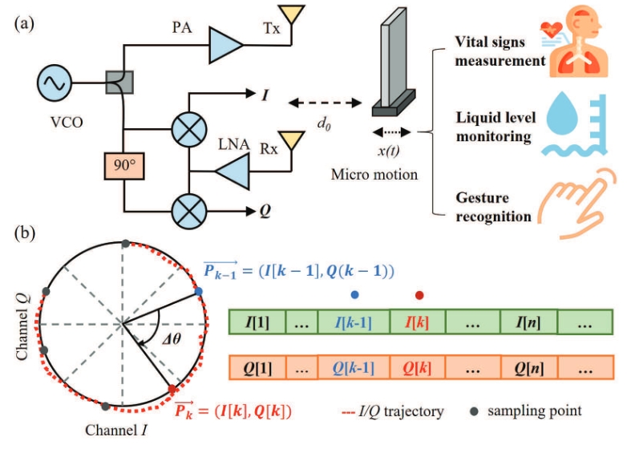
Accurate Phase Accumulation Technique under Vector Cross-multiplication Framework for High-accuracy Displacement Motion Sensing
Jie Cao, J. Liu, K. Zheng and C. Gu.
[Journal] IEEE TMTT, vol. 73, no. 11, pp. 9279-9291, Nov. 2025.
[Link]
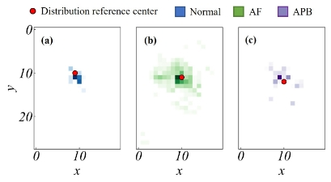
Arrhythmia Classification Based on Distribution Encoding Network with Biomedical Radar
Jie Cao, L. Wen, S. Dong, M. Tang, Y. Guo, C. Shen and C. Gu.
[Conference] IEEE MTT-S IMWS-AMP, Wuxi, China, Jul. 2025.
[Link]
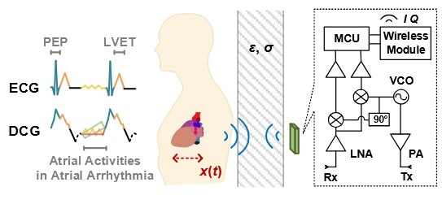
Utilizing Biomedical Radar in Clinical Doppler Cardiographic Detection of Atrial Arrhythmias
L. Wen, Jie Cao, Z. Zeng, Q. Cao, K. Chen and C. Gu.
[Conference] IEEE MTT-S IWS, Xi'an, China, May 2025.
[Link]
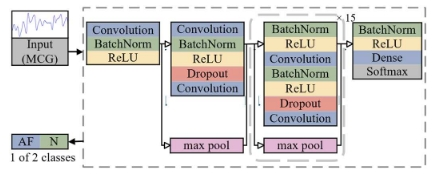
Noncontact Atrial Fibrillation Detection Utilizing Convolutional Neural Network Based on Doppler Biomedical Radar
W. Gao, L. Meng, Jie Cao, L. Wen, Z. Zi, Q. Cao, K. Chen and C. Gu.
[Conference] ICMMT, Xi'an, China, May 2025.
[Link]
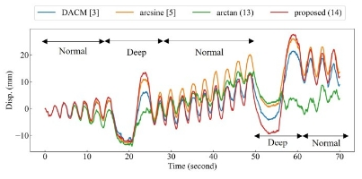
Displacement Motion Detection Based on Accurate Phase Accumulation Technique with Reduced Sampling Rate
Jie Cao, J. Liu, K. Zheng and C. Gu.
[Conference] IEEE MTT-S IWS, Xi'an, China, May 2025.
[Link]
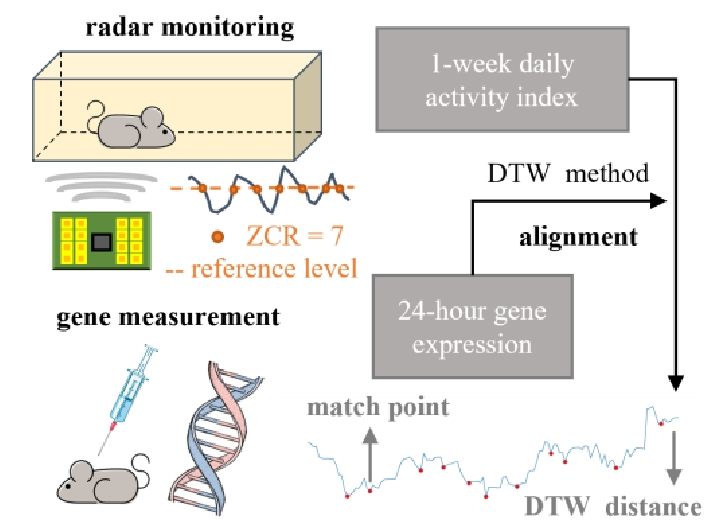
Microwave Bio-Radar Monitoring of Gene-controlled Activity Changes of Normal and Mouth-breathing Rats
Jie Cao, S. Dong, S. Li, X. Wang, M. Zhu and C. Gu.
[Conference] IEEE MTT-S IWS, Xi'an, China, May 2025.
[Link]
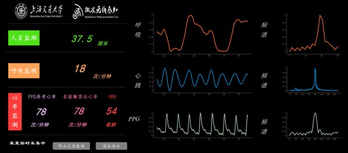
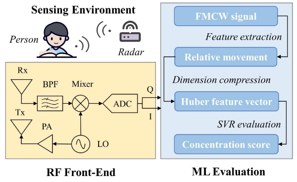
A Novel Contactless Concentration Evaluation Technique Using Millimeter-Wave Radar
Jie Cao, Y. Li, J. Liu, and C. Gu.
[Conference] ICMMT, Beijing, China, May 2024.
[Link]